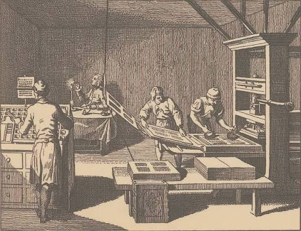
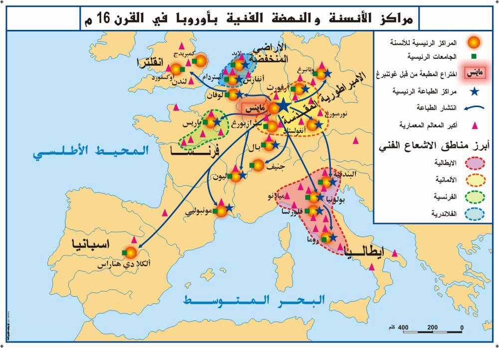
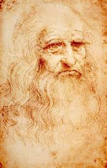
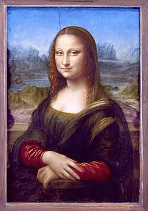
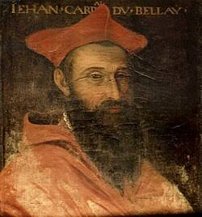
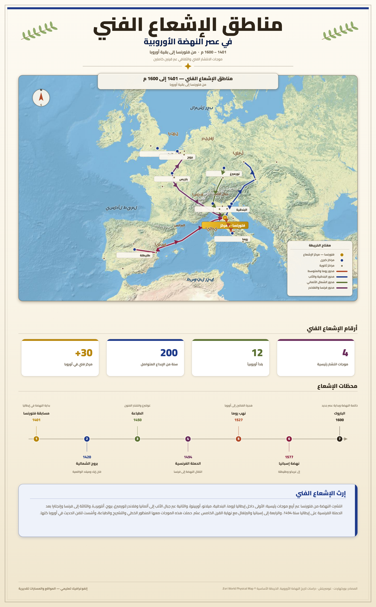

النهضة الأوروبية
مقدمة
عاشت أوروبا طيلة القرون الوسطى تحت سيطرة مؤسّسة الكنيسة الّتي هيمنت على مختلف جوانب الحياة، وأحبطت كلّ محاولات التّجديد باعتبارها مساسًا بالمسيحيّة، فعمّ الركود الفكري كافة أرجاء القارة. لكن الأوضاع بدأت تتغيّر منذ منتصف القرن الخامس عشر الميلادي، حين برزت شتّى بذور عقلية جديدة تؤمن بإمكانية التقدّم وبقدرة الإنسان على تحقيقه.
ما هي العوامل المساعدة على التحوّل؟ وما هي مظاهر الفكر الجديد؟ وما هي أبرز التيّارات الفكريّة والفنيّة الناتجة عنه؟
I العوامل المساعدة على التحوّل
1. أزمة المجتمع الأوروبي
توالت على الأوروبيين خلال القرنين XIV و XV م العديد من المصائب والكوارث الطبيعية، وتمثّلت بالخصوص في كثرة الحروب وما ترتّب عنها من مجاعات ساهمت بدورها في تفشّي أوبئة، وخاصة وباء الطاعون (الوباء الأسود) الّذي عمّ أرجاء أوروبا سنة 1348 م وأودى بحياة ⅓ سكّانها. فظلّت فكرة الموت حاضرة في أذهان الأوروبيين وتبعت في نفوسهم الحيرة.
وقد انشغلت الكنيسة المسيحية بالإنخراط في الصّراعات السّياسيّة وانغمس رجالها في حياة البذخ وجمع الثّروات بدلا من القيام بواجباتهم الدّينيّة تجاه رعاياهم. كما أصبحت المؤسّسة الدّينيّة تعاني من كثرة الإنقسامات وتعدّد المذاهب. واكتفت الكنيسة بدعوة المؤمنين إلى التّحلّي بالصّبر وتكثيف العبادات باعتبار أنّ تلك المصائب قدر محتوم لا يمكن مواجهته.
لكنّ هذه المواقف لم تعد ترضي بعض المفكّرين، بل وحتّى بعض رجال الدّين. وهكذا أصبح المجتمع الأوروبي يتطلّع إلى أفكار جديدة تحرّره من الجوّ الّذي يخبّط فيه.
2. حاجة المجتمع الأوروبي إلى تفكير علمي
برزت قيم جديدة تحدّدت الكنيسة وأنظمة الحكم السّائدة، حيث أرست أسس البحث الفلسفي والعلمي عبر استعمال العقل. وقد أبدع بعض الملوك ورجال الدّين والأثرياء الحاجة إلى هذا الفكر الجديد، ومن ضمن هؤلاء ملوك فرنسا (François 1er) (1494 – 1574) ورجل الأعمال الفلورنسي (إيطاليا) لوران دي ميديسي (Laurent De Médicis) (حكم فلورنسا بين 1469 و 1492).
وقد ساند هؤلاء قيام مدارس تلقّن العلوم الصّحيحة إلى جانب العلوم الدّينيّة، وأسّسوا معاهد وأكاديميات أبرزها معهد فرنسا (Collège de France) (باريس) وأكاديميّة ألفونس (في فلورنسا). وتكوّنت جمعيات تعتني بجمع المخطوطات وعقد الندوات وتبادل الآراء مثل جمعيّة الآداب واشهاره.
«ليكن في علم الجميع أنّ رغبتنا كانت ولا تزال دعم الآداب وضمان دراسات متينة لشبابنا. فنحن على يقين أنّ التّعليم الجيّد سيوفر لمملكتنا حاجتها من علماء الدّين ورجال القانون والموظّفين الأكفاء الذين يضحّون بمصالحهم الخاصّة لقيادة الصّالح العام...»
وقام مثقّفو ذلك العصر بنقل تعاليم القدماء من الإغريق والرّومان، ومؤلّفات العرب والمسلمين إلى برامج التّدريس فوجد فيها الطّلّاب روحا قديمة في منطلقها لكنها جديدة ونوريّة في جوهرها، وهو ما أسّس لفلسفة فكر جديد نقدي ذو منهج علمي وهو ما انفكت الكنيسة تحرّمه. وممّا ساعد على نشره تطوّر وسائل الطّباعة.
3. تطوّر وسائل الطّباعة
بدأ الأوروبيون يتخلّون عن إستعمال الجلد للكتابة منذ القرن XII م لفائدة الورق الّذي إخترعه الصّينيون ونقله إليهم العرب. وطوّروا إستعمال الورق المصنوع من الخرق البالية – وهي أقلّ كلفة – ثمّ تخلّوا عن الكتابة باليد تدريجيّا بعد أن تمكّن الألماني يوحنّا غوتنبرغ (J. Gutenberg) من إبتكار طريقة جديدة للطباعة تعتمد الحروف المنقولة المسكوبة في معدن الرّصاص، وذلك حوالي سنة 1450 م.
ويعدّ ذلك ثورة تقنيّة ومعرفيّة هائلة. فقد طبع في أوروبا خلال القرن XVI م بحسب أكثر من 250 مليون نسخة كتاب. وقد أدّى رواج هذه المؤلّفات، رغم محاولات الكنيسة والسّلطة السّياسيّة فرض الرّقابة عليها إلى نشر الفكر الجديد.
II الفكر الجديد
1. الحركة الإنسانيّة
إنطلقت هذه الحركة من إيطاليا أثناء القرن XIV م وانتشرت في بقية أرجاء أوروبا خلال القرنين الموالين بفضل مشاهير روادها أمثال إيرازم دي روتردام (Erasme de Rotterdam) وبفضل تطوّر وسائل الطّباعة ومساندة التّجار الأثرياء الإيطاليين.
وقد إهتمّ هؤلاء الرّواد بدراسة الآداب الإنسانيّة إنطلاقا من إحياء المؤلّفات الإغريقيّة والرّومانيّة القديمة، حيث لم يضن القرن XV حتّى تمكّنوا من العثور وترجمة معظم نصوص الفلسفة القدامى أمثال أفلاطون وسقراط ومسيير وفي. واعتمدوا في ذلك على الكتب العربيّة الّتي ترجمت بالأندلس وصقلية قبل سقوطهما بأيدي المسيحيين.
ولم يكتف روّاد الحركة بإعادة نشر هذه المؤلّفات بل أخضعوها للتّحليل من خلال محاولة التّعرّف على أصحابها والظّروف الّتي كتبت فيها وقارنوا بينها للتّثبّت من صحّتها والوقوف عند قيمتها الحقيقيّة. وهكذا نشأ أسلوب منهجي جديد في معالجة القضايا وهو الأسلوب النّقدي الّذي يعتمد حرّية المناقشة والتفكير في كافة المبادئ بما فيها الدّين والسّياسة، وهو أمر طالما حرمته الكنيسة حتّى ذلك التّاريخ.
وقد قادهم هذا الأسلوب إلى الشّعور بأنّ الحقيقة غير مطلقة وأنّه لا مجال للتوصّل إليها إلاّ عن طريق الحوار. ومن هنا جاء الإيمان بأنّ التقدّم ممكن وبأنّ الإنسان قادر على تحقيقه على خلاف موقف الكنيسة الّذي يعتمد أحكاما ثابتة لا يجوز الخوض فيها. وهكذا أصبح الإنسان محور كلّ الإهتمامات في هذا التيّار الّذي سُمّي بالحركة الإنسانيّة.
أورد تقرير اللجنة الإنسانية العربية لعام 2002 أن العالم العربي يترجم سنويا ما يقرب من 330 كتاب، وهو خمس ما ترجمه اليونان، وأن الإجمالي التراكمي للكتب المترجمة منذ عصر المأمون (813 - 833 م) حتى الآن [أي خلال 1169 سنة] يبلغ 100 ألف كتاب، وهو ما يوازي تقريبا ما ترجمه إسبانيا في عام واحد (ص ص 76-77).
ويرى أصحاب هذا المذهب أنّ على الإنسان تنمية قدراته الذّهنيّة والجسمانيّة لتحقيق التقدّم المنشود. ومن ثمّ، أضحى التّهافت على العلم والمعرفة بمثابة المبارزة والبحث عن البطولة. وهو ما يفسّر الثّقافة الواسعة والمتنوّعة الّتي كان عليها مثقّفو تلك المرحلة أمثال الإيطالي ليوناردو دا فينشي (Leonardo De Vinci) (1452 – 1519) الّذي كان رسّاما ونحّاتا ومهندسا وعالم رياضيات وميكانيك وطبيعيات وكيمياء وجيولوجيا في ذات الوقت.
ومدّت الحركة الإنسانية الطّريق أمام بروز تيّارات فكريّة أخرى مثل:
- التيّار الكلاسيكي: الّذي إنطلق من فرنسا والّذي يدعو إلى مواصلة الاعتماد على المصادر القديمة ويشدّد على ضرورة تهذيب سلوك الإنسان.
- التيّار العقلاني: ومن أعلامه الفيلسوف الفرنسي إيمانويل ديكارت (Emmanuel Descartes) صاحب كتاب "مقالة الطريقة" (Discours de la méthode) (1673) والّذي شدّد على أهميّة العقل في تفكير الإنسان.
2. النهضة الفنيّة
إنطلقت هذه الحركة أيضا من إيطاليا أثناء القرن XV م وامتدّت في القرن الخامس عشر إلى بقيّة أوروبا. وقد شكّلت منعرجا حاسما في تاريخ الفنون حيث أبدع روّادها أروع ما أنتجته البشريّة من فنون. ومن هؤلاء ليوناردو دا فينشي الّذي ترجم الفكر الجديد في لوحات ومنحوتات وإنجازات معماريّة خالدة، أبرزها لوحة الجوكوندة (Joconde) والّتي تعكس مقوّمات هذا التيّار الفنيّ الجديد وبالخصوص:
- الإعتماد على التّراث الإغريقي – اللاّتيني.
- العمل على تقديم الإنسان في أبهى صورة.
- تطبيق القواعد والمقاييس الرّياضيّة عند تخطيط وإنجاز أعمالهم الفنيّة.
وهكذا إتّسم فنّ النهضة بالدقّة والواقعيّة وتواضع "الدّيكور" على خلاف التيّار الباروكي الّذي ظهر خلال القرن XVII م وتميّز بميله إلى المواضيع الخياليّة وإفراطه في الزّركشة.
3. في الأدب
شهدت الحياة الأدبية نشاطا حثيثا. وقد جعل أدباء هذه الفترة من الإنسان موضوعهم الرئيسي، فعملوا على تحليل عواطفه وتناقضاته وحاولوا إعانته على تنمية قدراته الذاتية.
ومن أشهر كتّاب القرن XVI الفرنسيين: رايلي (Rabelais) (1494-1554) صاحب كتاب "بنتغريال" ومونتاني (Montaigne) صاحب كتاب "الرّسائل"، والروائي الإنجليزي الشهير وليام سكسبير (W. Shakespeare) (1533-1592) صاحب روائع: "عطيل، هملت، ريتشارد الثالث قلب الأسد، تاجر البندقية وروميو وجولييت".
«أريدك أن تحقق جيدًا اليونانيَّة والالتَّينِيَّة والعرَبِيَّة والكِدانِيَّة. عندما كُنتَ صبيًا في الخامسة والسادسة من عـمـرك كنـت بعـثـت فيك بعـض الميل للـفنـون الحرة كـالـهندسة والحـساب والموسـيقى، فتـابر على دراستها وواصـل دراسـة عـلـم الـفـلك، واحـفـظ عـن ظهـر قلـب النَّصوص الممتازة من القانون المدني. كما أرغب منك أن تكون شديد التطلُّع إلى ما في الطَّبيعة... ثمَّ كرَّر النَّظر بكلَ عناية في موْلُفات أطبَّاء الإغريق والعرب والرَّومان واكتـسب مـعـرفـة جيَّدة بـجـسم الإنسان بـالإكـثـار من عـمـلـيَّات التَّشـريح وهـكذا يجب أن أرى فيك بحـرا من العلم».
أمّا بالنسبة للقرن XVII، فقد برز بالخصوص الإسباني سرفانتس (Cervantes) صاحب كتاب "دون كي شوت" والفرنسي موليير (Molière) (1622-1673) صاحب الرّوائع: "مدرسة الأزواج، مدرسة النّساء والبخيل".
4. في السّياسة
برز مفكّرون، إستهدفوا عبر كتاباتهم زعزعة الأنظمة الشّموليّة وذلك إعتمادا على دراسات التّاريخ. فظهرت بذلك العلوم السّياسيّة الحديثة. وكان من أبرز روّادها في القرن XVI الإيطالي نيكولاس ماكيافلّي (Nicolas Machiavelli) (1469-1527) صاحب كتاب "الأمير" Le Prince (1571) الّذي دعا فيه إلى ضرورة الفصل بين الدّين والسّياسة باعتبار أنّ الدّين يتصل بالجانب الرّوحي للإنسان ويسعى إلى رواج الأخلاق الحميدة، بينما السّياسة فتركّز في معالجتها للمواضيع الدّنيويّة على مبدأ "الغاية تبرّر الوسيلة" والّذي قد يدفع أحيانا إلى إرتكاب الخطايا، فلا يجوز بالتالي ربطها بالدّين والأخلاق.
«... لا يمكن لأمير أن يحترم دوما الفضائل الّتي نصّ عليها الدّين، وتجعل منه في نظر المجتمع إنسانا طيّبا لأنّه في غالب الأحيان، يجد نفسه مضطرا، لكي يدافع عن دولته، أن يتصرّف بكيفيّة تتناقض مع الشّرف، ولا تقبلها الإنسانيّة، ولا الدّين. وانطلاقا من هذا المبدأ، يتعيّن أن يبقى مهيّئا لتوجيه عمله في الاتّجاه الّذي تمليه عليه الظّروف. فعليه ألاّ يبتعد عن فعل الخير، كلّما كان الأمر ممكنا. أمّا إذا اقتضت الضّرورة، فلا يجب أن يتردّد في فعل الشّر...».
وخلال القرن XVII برز في هذا المجال الإنجليزي جون لوك (John Locke) (1632-1704) بكتابه "حول الحكم المدني" (1689) حين دعا إلى إستناد السّلطة على "عقد إجتماعي" بين الحاكم والمحكومين بإعتبار أنّ التّابع أحرار ومتساويين. وقد فنّد بذلك نظريّة "الحق الإلاهي" الّتي كانت سائدة في أوروبا آنذاك.
خاتمة
شكلت النهضة الأوروبية تحوّلًا حاسمًا في تاريخ الإنسانية، إذ حرّرت العقل الأوروبي من قيود الكنيسة وأرست أسس الفكر الحديث القائم على العقل والتجربة والنقد، ومهّدت بذلك لانطلاق العصر الحديث.
📖 تعريفات
👤 شخصيات
- فرانسوا الأول (François 1er): ملك فرنسا (1494-1574)، شجّع الحركة الإنسانية وأسّس معهد فرنسا (Collège de France) بباريس. آمن بأن التعليم الجيد يوفر للمملكة علماء الدين ورجال القانون والموظفين الأكفاء.
- لوران دي ميديسي (Laurent De Médicis): رجل أعمال فلورنسي (إيطاليا)، حكم فلورنسا بين 1469 و1492. من رعاة الفنون والآداب ودعم الفكر الجديد.
- يوحنّا غوتنبرغ (J. Gutenberg): ألماني ابتكر حوالي سنة 1450م طريقة جديدة للطباعة تعتمد الحروف المنقولة المسكوبة في معدن الرصاص، ممّا أحدث ثورة تقنية ومعرفية هائلة.
- إيرازم دي روتردام (Erasme de Rotterdam): من مشاهير روّاد الحركة الإنسانية، ساهم في انتشارها في بقية أرجاء أوروبا.
- ليوناردو دا فينشي (Leonardo De Vinci): إيطالي (1452-1519)، كان رسّاما ونحّاتا ومهندسا وعالم رياضيات وميكانيك وطبيعيات وكيمياء وجيولوجيا في ذات الوقت. من أشهر أعماله لوحة الجوكوندة (Joconde).
- إيمانويل ديكارت (Emmanuel Descartes): فيلسوف فرنسي، صاحب كتاب "مقالة الطريقة" (Discours de la méthode) (1673)، شدّد على أهميّة العقل في تفكير الإنسان. من أعلام التيّار العقلاني.
- رابلي (Rabelais): راهب فرنسي (1494-1554) أصبح طبيبا ثمّ درس القانون واللغات اليونانية واللاتينية والكتب المقدسة. اهتم في كتاباته بالإنسان وكيفية تحقيق سعادته. صاحب كتاب "بنتغريال" (Pantagruel) ورسالة فارقنتوا (Gargantua).
- مونتاني (Montaigne): كاتب فرنسي من القرن XVI، صاحب كتاب "الرّسائل" (Les Essais).
- وليام سكسبير (W. Shakespeare): روائي إنجليزي شهير (1533-1592)، صاحب روائع: "عطيل، هملت، ريتشارد الثالث قلب الأسد، تاجر البندقية وروميو وجولييت".
- سرفانتس (Cervantes): كاتب إسباني، صاحب كتاب "دون كي شوت" (Don Quichotte)، برز في القرن XVII.
- موليير (Molière): كاتب فرنسي (1622-1673)، صاحب روائع: "مدرسة الأزواج، مدرسة النّساء والبخيل".
- نيكولاس ماكيافلّي (Nicolas Machiavelli): كاتب ودبلوماسي إيطالي (1469-1527)، صاحب كتاب "الأمير" (Le Prince) (1571). دعا إلى الفصل بين الدين والسياسة واعتمد مبدأ "الغاية تبرّر الوسيلة". من روّاد العلوم السياسية الحديثة.
- جون لوك (John Locke): فيلسوف إنجليزي (1632-1704)، صاحب كتاب "حول الحكم المدني" (1689). دعا إلى استناد السلطة على "عقد اجتماعي" بين الحاكم والمحكومين، وفنّد نظرية "الحق الإلاهي".
🌍 دول ومناطق
- إيطاليا: مهد الحركة الإنسانية والنهضة الفنية، انطلقت منها هذه الحركات أثناء القرن XIV وXV م قبل أن تنتشر في بقية أرجاء أوروبا.
- فلورنسا: مدينة إيطالية حكمها لوران دي ميديسي بين 1469 و1492، وكانت مركزا للفنون والآداب والفكر الجديد. أسّست بها أكاديمية ألفونس.
- فرنسا: من الدول التي شجّعت الحركة الإنسانية، خاصة في عهد فرانسوا الأول الذي أسّس معهد فرنسا (Collège de France) بباريس. منها انطلق التيّار الكلاسيكي.
- باريس: عاصمة فرنسا، بها أسّس فرانسوا الأول معهد فرنسا (Collège de France).
- الأندلس: منطقة في شبه الجزيرة الإيبيرية، ترجمت فيها الكتب العربية إلى اللاتينية قبل سقوطها بأيدي المسيحيين، ممّا ساعد روّاد الحركة الإنسانية على الاطلاع على الفلسفة القديمة.
- صقلية: جزيرة في البحر المتوسط، ترجمت فيها الكتب العربية إلى اللاتينية قبل سقوطها بأيدي المسيحيين.
⚔️ أحداث هامة
- الوباء الأسود (الطاعون) – 1348م: وباء الطاعون الذي عمّ أرجاء أوروبا سنة 1348م وأودى بحياة ثلث سكّانها، ممّا ترك فكرة الموت حاضرة في أذهان الأوروبيين.
- اختراع الطباعة – حوالي 1450م: ابتكر الألماني يوحنّا غوتنبرغ طريقة جديدة للطباعة تعتمد الحروف المنقولة المسكوبة في معدن الرصاص، ممّا جعل ذلك ثورة تقنية ومعرفية هائلة. طبع في أوروبا خلال القرن XVI أكثر من 250 مليون نسخة كتاب.
📜 مؤسسات ومعاهد
- معهد فرنسا (Collège de France): معهد أسّسه فرانسوا الأول بباريس لتلقين العلوم الصحيحة إلى جانب العلوم الدينية.
- أكاديمية ألفونس: أكاديمية أسّست في فلورنسا بإيطاليا لرعاية الآداب والعلوم.
- جمعية الآداب: جمعيات تكوّنت تعتني بجمع المخطوطات وعقد الندوات وتبادل الآراء.
📅 سنوات وفترات
- XII م: بداية تخلّي الأوروبيين عن استعمال الجلد للكتابة لفائدة الورق الذي اخترعه الصينيون ونقله إليهم العرب.
- XIV م: انطلاق الحركة الإنسانية من إيطاليا، وبداية المصائب والكوارث الطبيعية (حروب، مجاعات، أوبئة).
- 1348: وباء الطاعون (الوباء الأسود) الذي عمّ أرجاء أوروبا وأودى بحياة ثلث سكّانها.
- 1450: ابتكار يوحنّا غوتنبرغ طريقة جديدة للطباعة بالحروف المنقولة المسكوبة في معدن الرصاص.
- XV م: انتشار الحركة الإنسانية في بقية أرجاء أوروبا، وانطلاق النهضة الفنية من إيطاليا. ترجمة معظم نصوص الفلسفة القديمة (أفلاطون، سقراط، مسيير وفي).
- XVI م: طبع في أوروبا أكثر من 250 مليون نسخة كتاب. بروز كتّاب القرن XVI: رابلي، مونتاني، شكسبير، ماكيافلّي.
- 1494-1574: عهد فرانسوا الأول ملك فرنسا، الراعي الكبير للحركة الإنسانية.
- 1469-1492: فترة حكم لوران دي ميديسي لفلورنسا.
- 1673: صدور كتاب "مقالة الطريقة" (Discours de la méthode) للفيلسوف الفرنسي إيمانويل ديكارت.
- 1571: صدور كتاب "الأمير" (Le Prince) لنيكولاس ماكيافلّي.
- 1689: صدور كتاب "حول الحكم المدني" لجون لوك.
- XVII م: ظهور التيّار الباروكي في الفن، وبروز سرفانتس وموليير في الأدب، وجون لوك في السياسة.
📌 أخرى
- النهضة: حركة فكرية وفنية وأدبية وعلمية انطلقت من إيطاليا أثناء القرن XIV م وانتشرت في أوروبا خلال القرنين الموالين، وأرست أسس الفكر الحديث القائم على العقل والتجربة والنقد.
- الحركة الإنسانية: حركة فكرية انطلقت من إيطاليا أثناء القرن XIV م وانتشرت في بقية أرجاء أوروبا خلال القرنين الموالين. اهتمّ روّادها بدراسة الآداب الإنسانية انطلاقا من إحياء المؤلّفات الإغريقية والرومانية القديمة، واعتمدوا الأسلوب النقدي القائم على حرية المناقشة والتفكير. جعلت الإنسان محور كلّ الاهتمامات.
- الأسلوب النقدي: أسلوب منهجي جديد في معالجة القضايا نشأ عن الحركة الإنسانية، يعتمد حرية المناقشة والتفكير في كافة المبادئ بما فيها الدين والسياسة، ويعتبر أن الحقيقة غير مطلقة ولا يمكن التوصل إليها إلا عن طريق الحوار.
- التيّار الكلاسيكي: تيّار فكري انطلق من فرنسا، يدعو إلى مواصلة الاعتماد على المصادر القديمة ويشدّد على ضرورة تهذيب سلوك الإنسان.
- التيّار العقلاني: تيّار فكري من أعلامه الفيلسوف الفرنسي إيمانويل ديكارت، شدّد على أهميّة العقل في تفكير الإنسان.
- التيّار الباروكي: تيّار فني ظهر خلال القرن XVII م، تميّز بميله إلى المواضيع الخياليّة وإفراطه في الزّركشة، على خلاف فنّ النهضة المتّسم بالدقّة والواقعيّة وتواضع "الدّيكور".
- العلوم السياسية الحديثة: علوم ظهرت بفضل مفكّرين استهدفوا عبر كتاباتهم زعزعة الأنظمة الشمولية اعتمادا على دراسات التاريخ، ومن أبرز روّادها نيكولاس ماكيافلّي وجون لوك.
- العقد الاجتماعي: مبدأ دعا إليه جون لوك، ويقوم على استناد السلطة على اتفاق بين الحاكم والمحكومين باعتبار أن التابع أحرار ومتساويين.
- الحق الإلاهي: نظرية كانت سائدة في أوروبا آنذاك، تفنّدها نظرية "العقد الاجتماعي" لجون لوك.
- مبدأ "الغاية تبرّر الوسيلة": مبدأ اعتمده نيكولاس ماكيافلّي في كتابه "الأمير"، وقد يدفع أحيانا إلى ارتكاب الخطايا، ممّا يجعل الفصل بين الدين والسياسة ضروريا.
- لوحة الجوكوندة (Joconde): من أشهر أعمال ليوناردو دا فينشي، تعكس مقوّمات التيّار الفنيّ الجديد للنهضة: الاعتماد على التراث الإغريقي-اللاتيني، تقديم الإنسان في أبهى صورة، وتطبيق القواعد والمقاييس الرياضية.
- بنتغريال (Pantagruel): كتاب لرابلي الفرنسي، من أشهر مؤلّفات القرن XVI الأدبية التي جعلت من الإنسان موضوعها الرئيسي.
- رسالة فارقنتوا (Gargantua): رسالة لرابلي، تدعو إلى التعلّم الشامل للغات (اليونانية، اللاتينية، العربية، العبرية) والفنون الحرة (الهندسة، الحساب، الموسيقى، الفلك) والعلوم (القانون، الطب، التشريح).
- كتاب "الرّسائل" (Les Essais): كتاب لمونتاني الفرنسي، من أشهر مؤلّفات القرن XVI الأدبية.
- دون كي شوت (Don Quichotte): كتاب لسرفانتس الإسباني، من أشهر مؤلّفات القرن XVII الأدبية.
- كتاب "الأمير" (Le Prince): كتاب لنيكولاس ماكيافلّي (1571)، دعا فيه إلى ضرورة الفصل بين الدين والسياسة واعتمد مبدأ "الغاية تبرّر الوسيلة".
- مقالة الطريقة (Discours de la méthode): كتاب لإيمانويل ديكارت (1673)، شدّد فيه على أهميّة العقل في تفكير الإنسان.
- حول الحكم المدني: كتاب لجون لوك (1689)، دعا فيه إلى استناد السلطة على "عقد اجتماعي" بين الحاكم والمحكومين.
🗺️ خرائط ومعطيات مصورة





